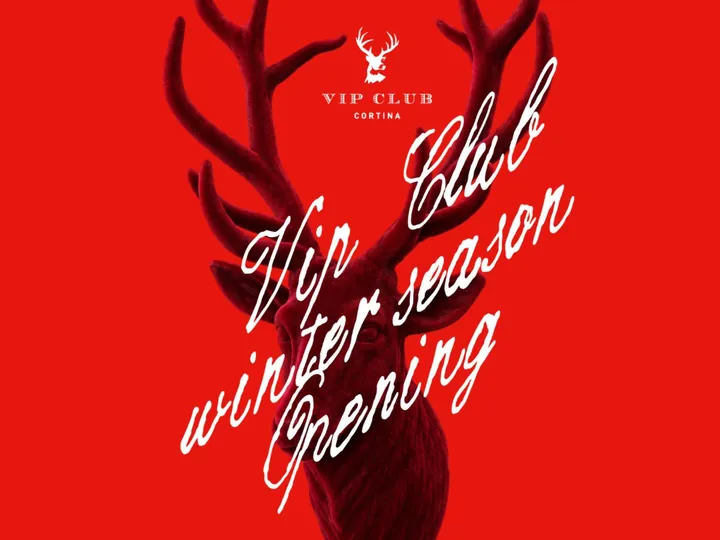

da ven 4 dic a lun 7 dic
The Art Of Night
L'inverno ha il suo lato più esclusivo . E torna a brillare al VIP Club, dove eleganza, musica e mondanità si incontrano per dare vita a una nuova stagione di notti straordinarie.
 Indicazioni
Indicazioni
- Costi e prenotazioni
- Costo non indicato · Prenotazione non indicata
- Programma
- Programma da verificare. Apri la fonte ufficiale per orari e possibili aggiornamenti.
- In caso di maltempo
- Nessuna indicazione specifica pubblicata.
- Note
- Acquisito automaticamente dalla fonte.
L’EVENTO
Descrizione completa
L'inverno ha il suo lato più esclusivo . E torna a brillare al VIP Club, dove eleganza, musica e mondanità si incontrano per dare vita a una nuova stagione di notti straordinarie.
Dal 4 al 7 dicembre , quattro appuntamenti inaugurano il winter season di uno dei luoghi simbolo della nightlife ampezzana.
Un'atmosfera sofisticata, ospiti speciali e una colonna sonora d'eccezione, con Francesco Bernardini e Giorgio Roman DJ a scandire il ritmo di ogni serata.
Il momento più atteso è sabato 5 dicembre , quando VIP Club incontra la leggendaria Taverna Anema e Core di Capri. Gianluigi Lembo porta a Cortina l'energia inconfondibile della notte caprese: musica, ritmo, coinvolgimento e quella contagiosa voglia di festa che trasforma ogni serata in uno spettacolo.
Un incontro tra due icone dell'intrattenimento italiano, per una notte dal sapore mediterraneo nel cuore delle Dolomiti . L'esperienza prende forma già a tavola, con la cena dalle ore 20:00, per proseguire con l'after dinner dalle 00:00.
Il programma continua domenica 6 dicembre con il ritorno di Anema e Core e si conclude lunedì 7 con Francesco Bernardini, Giorgio Roman DJ.
Quattro notti, un'unica destinazione, infinite occasioni per brillare. Perché a Cortina l'inverno non si vive soltanto di giorno.
IL PROGRAMMA
Programma e orari
Appuntamenti raccolti dalle fonti elencate. Dove manca un orario, non è ancora disponibile in questa scheda.
Programma pubblicato
- 2026-12-04 — 2026-12-04 · 20:00:00
- 2026-12-05 — 2026-12-05 · 20:00:00
- 2026-12-06 — 2026-12-06 · 20:00:00
- 2026-12-07 — 2026-12-07 · 20:00:00
INFORMAZIONI UTILI
Prima di partire
- Controllare la fonte prima di partire.
ORGANIZZAZIONE